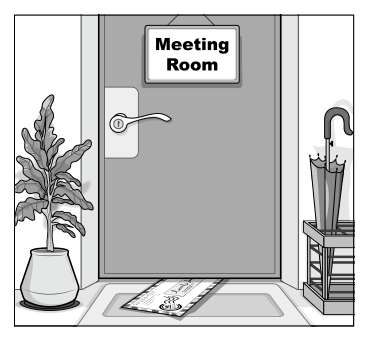

開卷有益 ／
國中教育會考 ／ 英語 ／ 113 年113 年國中教育會考英語試題與答案
這一頁是民國 113 年國中教育會考英語的整份歷屆試題，共 43 題，題目與標準答案出自心測中心 會考歷屆試題（依著作權法 §9，考試試題不受著作權保護），其中 43 題附有詳解。以下逐題列出題幹、選項與答案；要計時作答或記錄成績，請用線上練習。
線上作答這一科 →
全部 43 題
第 1 題
Look at the picture. There is under the door.

（A） an envelope（B） a plant（C） a sign（D） an umbrella答案：（A）
詳解與考點 正解：題幹的 under the door 要找「在門下方」的物品，關鍵是位置而非只辨認圖中的物品。A 的 an envelope 意為「一個信封」，圖片中的扁平信封正壓在門下方，故 A 為正解。
B：a plant 是左側的盆栽，不在門下方。
C：a sign 是 Meeting Room 標示牌，掛在門上方而非 under the door。它看起來對，是因為標示牌也在門附近，但介系詞 under 明確限定在門下。
D：an umbrella 是右側傘架中的雨傘，位置不符。
本題考點：圖文判讀——先依介系詞鎖定位置，再辨認物品；位置判準——under 表「在……下方」，不可只因物品靠近門就選入。
第 2 題
My hurts so much that I cannot even turn my head.
（A） arm（B） knee（C） neck（D） stomach答案：（C）
詳解與考點 正解：句中 cannot even turn my head 是選字的關鍵動作；能使人無法轉頭的是頸部疼痛。C 的 neck 表「頸部」，句意為「我的脖子痛得連頭都不能轉」，故 C 為正解。
A：arm 表「手臂」，疼痛不會直接妨礙轉頭。
B：knee 表「膝蓋」，與頭部轉動無關。
D：stomach 表「胃」，也無法對應轉頭動作。
本題考點：身體部位詞彙——依動作判斷對應部位；判準——turn one’s head 的活動主要由頸部完成。
第 3 題
Our school basketball team won the national game last night. We are so them.
（A） popular with（B） proud of（C） sorry for（D） worried about答案：（B）
詳解與考點 正解：題幹說校隊贏得全國賽，空格要表達「我們為他們感到驕傲」。be proud of 表「以某人或某事為榮、為其感到驕傲」，故 B 為正解。
A：popular with 表「受歡迎」，不表示因獲勝而感到的情緒，故錯誤。
C：sorry for 表「感到抱歉」，與獲勝的正面情境不合，故錯誤。
D：worried about 表「擔心」，與慶祝獲勝的語氣不合，故錯誤。
本題考點：情感形容詞片語——be proud of 表為某人或某事感到驕傲；判準——先由事件的正負面判斷所需情緒，再選搭配正確的介系詞片語。
第 4 題
Tomorrow is Sam’s last day in the office. Nobody knows why he decided to .
（A） hide（B） leave（C） pack（D） walk答案：（B）
詳解與考點 正解：Tomorrow is Sam’s last day in the office 提示他將離開職場。B 的 leave 表「離開、離職」；decide to leave 可表決定離開辦公室或工作，符合語境，故 B 為正解。
A：hide 表「躲藏」，和最後一天上班沒有合理連結。
C：pack 表「打包」，可作離職前的動作，但 decide to pack 未表達決定離職。
D：walk 表「走路」，不合決定離開工作的語意。
本題考點：動詞語意與情境搭配——先由上下文鎖定事件；判準——last day in the office 搭配 decide to leave，指離職或離開工作場所。
第 5 題
It’s not a good idea to go mountain climbing in this bad . We should wait until the typhoon goes away.
（A） chance（B） dream（C） habit（D） weather答案：（D）
詳解與考點 正解：後句說應等颱風離開，typhoon 是天氣現象，故空格須填表示天候的名詞。D 的 weather 表「天氣」，bad weather 指惡劣天氣，故 D 為正解。
A：chance 表「機會」，不能受 bad 修飾來指颱風狀況。
B：dream 表「夢想」，與爬山安全無關。
C：habit 表「習慣」，不會因颱風過後而消失。
本題考點：名詞語意——利用上下文的具體提示詞選字；判準——颱風及等待它離開，皆指向 weather。
第 6 題
Chris loves walking with Anna on snowy days, but Anna hates very much.
（A） them（B） so（C） one（D） it答案：（D）
詳解與考點 正解：Anna hates 後面要代替前文「在下雪天散步」這件事，須用可指代整件事的代名詞。D 的 it 可代替前述活動，句意為 Anna 很討厭這件事，故 D 為正解。
A：them 用於複數人或物，不能代替整個活動。
B：so 是副詞或連接詞，不能作 hates 的受詞。
C：one 代替單數可數名詞，不能代替走路這件事。
本題考點：代名詞指涉——it 可代替前文提到的動作或事件；判準——動詞後若要回指整件事，用 it，不用代替名詞的 one。
第 7 題
Lora likes to eat bananas that are already a little brown on the outside, and so I.
（A） am（B） do（C） have（D） will答案：（B）
詳解與考點 正解：so + 助動詞 + 主詞表示「某人也如此」，助動詞要和前句時態及動詞種類一致。前句的 likes 是一般現在式的一般動詞，故用 do；B 形成 so do I，表「我也是」，故 B 為正解。
A：am 用於 be 動詞句，但前句不是 Lora is。
C：have 用於現在完成式，但前句沒有 have 或 has。
D：will 用於未來式，但前句是一般現在式。
本題考點：附和倒裝——so + 助動詞 + 主詞表肯定附和；判準——一般現在式的一般動詞，主詞為 I 時用 do。
第 8 題
Your refrigerator shouldn’t be making loud noises now, but if it does, just give me a call and I’ll come check it again.
（A） already（B） even（C） finally（D） still答案：（D）
詳解與考點 正解：but if it does 表示冰箱原本不該再發出聲音，卻可能仍有此情形。D 的 still 表「仍然」，shouldn’t still be making loud noises 表「現在仍不應發出吵雜聲」，故 D 為正解。
A：already 表「已經」，不表問題持續。
B：even 表「甚至」，不符合此處要修飾持續狀態的功能。
C：finally 表「終於」，與修理後仍可能有噪音的語境不合。
本題考點：副詞語意——still 表示狀態持續；判準——當語境是「本應停止卻仍可能發生」，選 still。
第 9 題
After winning money in the card game, Jay decided to try again. He felt that he might also be a second time.
（A） famous（B） interested（C） lucky（D） ready答案：（C）
詳解與考點 正解：題幹說 Jay 贏了牌局後決定再試一次，表示他期待第二次也有好運。lucky 意為「幸運的」，可用 be lucky 表示「是幸運的」，最符合再次贏錢的心理預期，故 C 為正解。
A：famous 意為「有名的」，不能說明贏錢後想再試一次的原因，錯誤。
B：interested 意為「感興趣的」，容易由 decided to try again 聯想到他對牌局有興趣；但空格所在句要承接第一次贏錢，表達他期待第二次仍有好運，而非只表示願意再玩，故錯誤。
D：ready 意為「準備好的」，表示已準備完成，不等於有再次獲勝的運氣，錯誤。
本題考點：形容詞語意與語境——選字時要由前後事件判斷語意；贏錢後想再試一次，對應期待自己仍然 lucky「幸運的」，不可只選語法上可接 be 的形容詞。
第 10 題
The knife doesn’t cut very well. It’s not as as before.
（A） bright（B） heavy（C） quick（D） sharp答案：（D）
詳解與考點 正解：題幹說刀子切得不太好，描述刀具切割效能應用 sharp。sharp 表「鋒利的」，not as sharp as before 表「不像以前那麼鋒利」，故 D 為正解。
A：bright 表明亮的，不能描述刀的切割效能，故錯誤。
B：heavy 表沉重的，與切不切得動無直接對應，故錯誤。
C：quick 表快速的，不是形容刀刃鋒利程度的慣用語，故錯誤。
本題考點：形容詞語意與搭配——sharp 可形容刀具鋒利；判準——由名詞的功能判斷其慣用形容詞。
第 11 題
John will stay with his sister until he an apartment.
（A） will find（B） would find（C） finds（D） found答案：（C）
詳解與考點 正解：until引導時間副詞子句，主句John will stay已用未來式時，until子句要用現在簡單式代替未來。主詞he是第三人稱單數，find要加s，填finds，故 C 為正解。
A：will find把未來式用在until時間副詞子句中，不符現在式代替未來式的規則，錯誤。
B：would find是過去未來式，題幹沒有過去觀點或假設條件，不符，錯誤。
D：found是過去式，與主句所述未來安排不一致，錯誤。
本題考點：時間副詞子句——when、until、after等引導的未來時間子句以現在式代替未來式；主詞動詞一致——he搭配現在簡單式動詞finds。
第 12 題
Students to go on the school trip should ask their parents first.
（A） who want（B） want（C） who they want（D） what they want答案：（A）
詳解與考點 正解：Students 後的空格要補入修飾人的形容詞子句；空格內的動詞 want 以 Students 為主詞，須用主格關係代名詞 who 引導。Students who want to go on the school trip 指「想參加校外旅行的學生」，故 A 為正解。
B：want 前缺少引導關係子句的 who，Students want 雖可成句，卻無法直接接成題目的名詞片語結構，錯誤。
C：who 已作關係子句主詞，再加 they 形成兩個主詞，文法錯誤。它看起來對，是因為 they 也能指學生，但關係子句中 who 已經代替 Students。
D：what 表「所指的事物」，不能用來修飾先行詞 Students，也不符人的關係代名詞用法，錯誤。
本題考點：關係代名詞 who——先找先行詞，先行詞為人且在子句中作主詞時，用 who＋動詞；關係子句主詞已由 who 擔任時，不可再重複加 they。
第 13 題
The temple sits alone in the mountains at a height of 3,000m sea level.
（A） above（B） at（C） below（D） in答案：（A）
詳解與考點 正解：at a height of 3,000m sea level 說明寺廟海拔比海平面高 3,000m，固定搭配是 above sea level。A 的 above 表「在……之上」，故 A 為正解。
B：at sea level 表「在海平面上」，不符合高度為 3,000m 的意思。
C：below sea level 表「低於海平面」，與山中寺廟的高度相反。
D：in 不能和 sea level 形成此處的高度搭配。
本題考點：介系詞固定搭配——above sea level 表海拔高於海平面；判準——數值表示超過海平面時用 above，不用 at。
第 14 題
Patty spent several days planning to invite Charlie to dinner, she couldn’t say a word when they met.
（A） but（B） if（C） or（D） so答案：（A）
詳解與考點 正解：題幹前句說 Patty 花了好幾天計劃邀請 Charlie 吃晚餐，後句卻說見面時一句話也說不出口，前後語意轉折，應用 but 表「但是」，故 A 為正解。
B：if 表條件，句中沒有「如果……就……」的條件關係，錯誤。
C：or 表選擇，前後兩事不是可供選擇的項目，錯誤。
D：so 表因果結果；它看起來對，是因為計劃後未能開口似有前後順序，但句意強調的是預期與結果相反，不是因果，錯誤。
本題考點：對等連接詞——but 表轉折、if 表條件、or 表選擇、so 表結果；判斷時須先看兩分句的語意關係。
第 15 題
I can’t tell you what I think of the movie because I it. I’ll probably watch it this Saturday.
（A） am not seeing（B） don’t see（C） haven’t seen（D） won’t see答案：（C）
詳解與考點 正解：I’ll probably watch it this Saturday表示說話當下尚未看這部電影；haven’t seen是現在完成式，表「到目前為止還沒看過」，符合語意，故C為正解。
A：am not seeing是現在進行式，表目前沒有在看，不能完整表達至今未曾看過，錯誤。
B：don’t see多表習慣或一般狀態，不能表達「到目前為止尚未完成」的經驗，錯誤。
D：won’t see表未來不打算看，和週六可能會看的意思矛盾。它看起來對，是因為句中有this Saturday，但該時間是未來觀看計畫，不是拒絕觀看，錯誤。
本題考點：現在完成式——have／has＋過去分詞可表到目前為止的經驗或未完成狀態；語境判讀——看到未來時間時，先分辨它是未來計畫，還是否定意願。
第 16 題
The new guy at the help desk answers calls like a . There are no ups and downs in his voice and you can’t tell if he is happy or sad.
（A） father（B） foreigner（C） radio（D） robot答案：（D）
詳解與考點 正解：題幹以沒有抑揚頓挫、聽不出快樂或悲傷描述說話方式，關鍵是機械而缺乏情感。D 的 robot 表「機器人」；answer calls like a robot 是指像機器人般說話，故 D 為正解。
A：father 表「父親」，沒有無情感語調的慣用聯想。
B：foreigner 表「外國人」，不能由國籍推論說話沒有情緒。
C：radio 表「收音機」，雖也和聲音有關，但收音機節目仍可能有各種語調；它看起來對，是因為題目談聲音，真正重點卻是機械、無情感。
本題考點：語境詞彙推理——依描述選出比喻對象；判準——無抑揚頓挫且沒有情緒的說話方式，可形容為 like a robot。
第 17 題
Jasmine planned to spend her summer in the country, but right after she got there, she started to the noise in the city.
（A） enjoy（B） mind（C） miss（D） notice答案：（C）
詳解與考點 正解：but 表示到了鄉下後出現和預期相反的感受，空格要填表達思念的動詞。C 的 miss 表「想念」；Jasmine 反而想念城市的噪音，故 C 為正解。
A：enjoy 表「享受」，語意不合想念原先環境的轉折。
B：mind 表「介意」，常用於否定句或疑問句，此處也不表懷念。
D：notice 表「注意到」，只表察覺，沒有感情上的思念。它看起來對，是因為到鄉下可能會注意到安靜，但 but 後需要的是對城市噪音的情感反應。
本題考點：動詞語意辨析——利用轉折詞判斷情緒方向；判準——從城市到鄉下卻懷念城市事物時，用 miss。
第 18 題
“Bad traffic” is perhaps the excuse for being late when your boss knows it only takes you five minutes to walk to work.
（A） easiest（B） oldest（C） smartest（D） worst答案：（D）
詳解與考點 正解：老闆知道步行上班只要五分鐘，卻以塞車當遲到理由，語境在評價這個藉口很差。D 的 worst 表「最糟糕的」，故 D 為正解。
A：easiest 表「最容易的」，不表示藉口缺乏可信度。
B：oldest 表「最古老的」，雖可讓人聯想到老梗，句中要表達的是不合理而非年代久遠。
C：smartest 表「最聰明的」，與明顯站不住腳的藉口相反。
本題考點：形容詞語意與語境邏輯——以情境判斷評價方向；判準——理由明顯不可能成立時，應選負面程度最高的 worst。
第 19 題
The housework in Mr. and Mrs. Wang’s family between them and their kids. Everyone’s got their own job to do.
（A） is shared（B） are shared（C） shares（D） share答案：（A）
詳解與考點 正解：主詞 The housework 是不可數名詞，視為單數；家務由家人分配，須用被動語態。A 的 is shared 是單數被動，表「家務被共同分擔」，故 A 為正解。
B：are shared 雖是被動語態，但 are 對應複數主詞；housework 為單數不可數名詞，主謂不一致。它看起來對，是因為 between 後有 them 和 their kids 等複數名詞，但真正主詞仍是 The housework。
C：shares 是主動單數，變成「家務分享」，語意不通。
D：share 是主動複數或原形，既與單數主詞不合，也把應被分配的家務誤作主動者。
本題考點：被動語態與主謂一致——先找真正主詞，再判斷動作承受者；判準——不可數名詞 housework 用單數 is，家務被家人分擔用 is shared。
第 20 題
I want to find another dentist because pulled out a good tooth last time I went to him.
（A） I（B） me（C） mine（D） myself答案：（C）
詳解與考點 正解：because 子句已有主詞 he，空格要代替「我的牙醫」這個名詞片語，須用名詞性所有格。C mine＝my dentist，句意為「因為上次我去找我的牙醫時，他拔掉了一顆好牙」，故 C 正確。
A：I 是主格人稱代名詞，指「我」，不能代替 my dentist。
B：me 是受格人稱代名詞，不能代替名詞片語 my dentist。
D：myself 是反身代名詞，指「我自己」，不合語意與句構。
本題考點：名詞性所有格——mine、yours、his 等可單獨代替「所有格形容詞＋名詞」；句構判斷——已有子句主詞時，依空格所代替的成分判斷，不把所有格誤當人稱代名詞。
第 21 題
Mom: Linda, you’ve been playing computer games all evening! Have you finished your report? Linda: Well, most of it this afternoon, and I’ll finish it by Friday.
（A） I would do（B） I did（C） I was doing（D） I’ll do答案：（B）
詳解與考點 正解：題幹的 this afternoon 表示「今天下午已完成」的動作，因此要用過去簡單式。B 的 I did 表示「我今天下午做了大部分」，與語境相符，故 B 為正解。
A：I would do 表假設或過去觀點下的未來，不能表示已在今天下午完成的部分，錯誤。
C：I was doing 是過去進行式，強調當時正在進行，未表達動作已完成，錯誤。
D：I’ll do 是未來式，指尚未做的事；它看起來對，是因為後句有 by Friday，但空格說的是今天下午已做完的大部分，錯誤。
本題考點：過去簡單式——描述在過去時間已完成的動作；時態判斷——先找動作的時間與完成狀態，this afternoon 的已完成部分用 did，by Friday 的未完成部分才用 will finish。
It was around eight o’clock on Saturday night. Philip was at home with his little brother, Jason. Jason was hungry and kept crying. But Philip couldn’t cook and their father was not home yet because he was working late in the office. So Philip decided to take Jason out for some food. Half an hour later, when they came back home, Philip was surprised to find that their father was talking to the police and a woman outside their house. He didn’t know who the woman was. She looked scared and stood behind the police. Philip’s father was very angry and kept shouting, “I didn’t do anything wrong! I forgot my keys and was just trying to get into MY OWN HOUSE!” But the police didn’t believe him until Philip ran to them and explained everything. The police told Philip that the woman called 110 when she saw Philip’s father trying to get into a house through a window. That was how it all happened.
第 22 題
Why did Philip go out?
（A） To meet a woman.（B） To look for his father.（C） To ask the police for help.（D） To buy food for his brother.答案：（D）
詳解與考點 正解：題目問 Philip 出門的原因，須回到故事開頭的直接敘述。Jason 肚子餓且一直哭，Philip 不會煮飯，父親又還沒下班，所以 Philip 決定帶 Jason 出去買食物。to buy food for his brother 表示「替弟弟買食物」，故 D 為正解。
A：文中後來出現一名女子，但 Philip 出門不是為了見她，錯誤。
B：父親當時在辦公室加班，Philip 沒有出門找父親，錯誤。
C：警察是在 Philip 和 Jason 回家後才出現；它看起來對，是因為故事後段有警察與誤會，但 Philip 出門時警察尚未登場，錯誤。
本題考點：閱讀細節——回答人物行動原因時，要找行動發生前後的直接因果；故事後段出現的人物或事件不一定是前一行動的原因，須依時間順序判讀。
第 23 題
Why was Philip’s father angry?
（A） He forgot his keys.（B） The woman was hiding from him.（C） The police didn’t believe what he said.（D） Philip and his brother went out at night.答案：（C）
詳解與考點 正解：題幹問父親生氣的原因，要找他直接表達的不滿。父親從窗戶進自己的房子後向警察解釋，警察卻不相信他，因此 C「警察不相信他所說的話」為正解。
A：忘記鑰匙是他必須從窗戶進屋的起因，不是使他生氣的直接原因，錯誤。
B：文中是那名女子害怕地站在警察身後，沒有說她躲著父親，錯誤。
D：Philip 和弟弟晚上外出是事件經過，沒有造成父親生氣，錯誤。
本題考點：閱讀細節——依人物的言語與情緒找直接原因；因果判讀——忘記鑰匙是事件導火線，警察不相信他的解釋才是憤怒原因。
第 24 題
Kevin is going to buy some fresh bread at Baker’s Kitchen. He loves white bread, his mom likes farm bread, his father enjoys bagels, and his sister eats only challah. Which is the earliest possible time for him to get all these breads for his family?
（A） 11:00am.（B） 4:00pm.（C） 5:00pm.（D） 7:00pm.答案：（C）
詳解與考點 正解：題幹要湊齊 white bread、farm bread、bagels、challah 四種，最早須等到最晚出爐的那一種。海報時刻為 white bread 10:30am、bagels 11:30am、challah 3:30pm、farm bread 4:30pm，最晚是 farm bread 的 4:30pm，故最早可一次買齊的時間須不早於 4:30pm，選項中僅 C 的 5:00pm 符合。
A：11:00am 時 bagels（11:30am）、challah、farm bread 都尚未出爐。
B：4:00pm 看似接近，但 farm bread 要 4:30pm 才出爐，仍差 30 分鐘——這是本題最強誘答，因為它已通過 challah 3:30pm 卻漏看最晚的 farm bread。
D：7:00pm 雖然買得到，但題目問「最早可能」的時間，7:00pm 晚於 5:00pm，非最早。
本題考點：時刻表的極值判讀——「同時取得多項」的最早時間＝各項時間的最大值；先把題目點名的品項逐一回表抄出時刻，取最晚者再對選項，切忌只看前幾項就下判斷。
第 25 題
What do we know about Baker’s Kitchen?
（A） It is open five days a week.（B） Its breads are half price one hour before closing.（C） Its croissants and pretzels are sold on weekends.（D） Its members can save $100 when they shop on Fridays.答案：（B）
詳解與考點 正解：海報寫「All breads at half price after 8pm（after 7pm on Saturdays and Sundays）」，營業時間為週一至週五 7:30am–9pm、週六日 7:30am–8pm。平日 8pm 開始半價而 9pm 打烊、假日 7pm 開始半價而 8pm 打烊，兩者都恰是「打烊前一小時」，故 B 正確。
A：營業時間含週一至週五與週六、週日，是一週七天營業，非五天。
C：croissants 與 pretzels 都標註「*Friday only」，只在週五供應，週五屬平日而非週末。
D：會員是「花 $100 入會」並可在消費時省 10%，不是「省下 $100」，海報也未限定週五。
本題考點：廣告細節的等值換算——半價時間要與營業時間相減才看得出「打烊前一小時」；註記符號（*Friday only）與金額語意（付 $100 vs 省 $100）是廣告題最常見的兩類誘答。
第 26 題
What is recommended to people who want to visit the festival?
（A） Using the free festival bus service.（B） Visiting the festival on the weekend.（C） Entering Satyr’s Park from Fox Street.（D） Parking in Garden Square and walking to the festival.答案：（A）
詳解與考點 正解：題幹問對想參觀慶典者的「建議」。資訊第 2 點寫「You are welcome to take the Free Festival Bus at the Goat Street Station to the festival.」，明確歡迎搭乘 Goat Street 站的免費接駁巴士，故 A 正確。
B：第 6 點只說 Faun's Weekend Flower Market 每天 8am 至 2pm 開放，全文未建議挑週末前往。
C：第 4 點寫「During the festival, Fox Street is closed; no cars can enter the street.」，Fox Street 慶典期間封閉，不可能建議由此進入。
D：第 5 點寫「Garden Square won't be open for car parking」，該處不開放停車，與此選項相反。
本題考點：條列式導覽資訊的「建議 vs 禁止」分辨——先掃出帶正面語氣（welcome to／you can）的條目當建議來源，再把帶否定語氣（closed／won't be open）的條目對應到誘答選項逐一排除。
第 27 題
What can we learn about the farmers’ market from the map?
（A） The farmers’ market is next to the flower market.（B） The farmers’ market and the festival are on the same block.（C） You can go to the farmers’ market by taking Bus No. 157 to Puppy Street.（D） The nearest metro station to the farmers’ market is the Koala Street Station.答案：（D）
詳解與考點 正解：題幹問「從地圖」能得知農夫市集的什麼。地圖上 Garden Square 標示為 FARMERS' MARKET，其左側緊鄰 Koala Street 上的 Metro 標記，是距離農夫市集最近的捷運站，故 D 正確。
A：Faun's Weekend Flower Market 位在 Bear Road 一帶的街廓，與 Lion Road 上的 Garden Square 分屬不同街廓，兩者並不相鄰。
B：慶典所在的 Satyr's Park 與 Garden Square 位於地圖上不同街廓，並非同一街廓。
C：地圖上 Puppy Street 側的公車號碼為 28、125、505，不含 157；157 出現在另一側的站牌。
本題考點：地圖題的位置與代號比對——題目點明 from the map 時，答案必須在地圖上找得到而非取自文字條目；捷運站遠近看圖示與街道相鄰關係，公車可達性則須核對該站牌實際列出的號碼。
Yan lived a good life in a big house. One day he invited a friend to dinner at his house. However, on the dinner table there was only one small dish of one small fish. The friend looked quietly at the fish. It was no bigger than a finger. Then he asked Yan if he could borrow a lamp. “What for?” Yan asked. “Well, it’s so dark in here,” the friend said with a dry smile, “I can’t see the other delicious dishes you’ve prepared for me.” Chang kept a lot of ducks and chickens on his farm. One day, his best friend came to visit him. At noon, Chang told his friend that he couldn’t let him stay for lunch because there wasn’t much food to eat. The friend looked out at Chang’s farm animals for a moment. Then he asked Chang if he had a big knife. “Yes, but what for?” Chang asked. “I’m thinking about killing the horse I rode here so we’ll have something for lunch,” the friend said. “But how are you going to go home without it?” “Well, you wouldn’t mind lending me one of your many ducks or chickens so I can ride it home, would you?”
第 28 題
What kind of people do Yan’s and Chang’s friends most likely think Yan and Chang are?
（A） They enjoy good food.（B） They don’t like to share.（C） They like to make friends.（D） They don’t like new things.答案：（B）
詳解與考點 正解：兩段故事的關鍵都是主人明明有食物或家禽，卻不願招待來訪朋友；朋友以誇張反諷指出此事。B 的 They don’t like to share 表示「他們不喜歡分享」，最符合，故 B 為正解。
A：故事提到魚、鴨和雞，但朋友諷刺的是主人不肯款待，並非兩人喜愛美食，錯誤。
C：兩人有朋友來訪，不能推論他們喜歡交朋友，錯誤。
D：文中沒有新事物，也沒有兩人排斥新事物的線索，錯誤。
本題考點：閱讀推論——從人物行為與說話語氣推知性格；反諷——朋友表面借燈、借刀或借家禽，實際上以誇張方式凸顯主人吝於分享。
第 29 題
What is it in the second story?
（A） A big knife.（B） The horse.（C） Lunch.（D） One of Chang’s ducks or chickens.答案：（B）
詳解與考點 正解：題幹問第二則故事中的 it 指涉何物；朋友說要殺掉自己騎來的 it 當午餐，接著又問沒有 it 要怎麼回家，前後都指他騎來的馬the horse，故 B 為正解。
A：a big knife 是用來殺馬的工具，不是被殺來當午餐或用來回家的對象。
C：lunch 是目的，不是可被騎來、殺掉或騎回家的具體名詞。
D：Chang的鴨或雞是朋友後來要借來騎回家的對象，不是前句it所指。
本題考點：英文代名詞指涉——it通常代替前文可數、具體的單數名詞；要以代名詞所在句與後續動作是否都能成立來驗證指涉對象。
Usually, people visit bookstores to buy books. But those who walk into Cotoha come to see its owner, Chen Bing-Hong. They bring him books with different problems. Some have lost their covers, some are missing a few pages, and some have pages that are falling out. Chen can always fix the books and make them whole again. Chen sees himself as a doctor. He says that books, like people, get sick and need help. In Taiwan, there are not many “doctors” like him, and most of them work for big libraries and museums. If big libraries and museums are hospitals, Chen’s bookstore is a health center. Big libraries and museums fix important old books with serious problems, and Chen helps people with books that have smaller problems. However, the smaller size of the problems doesn’t mean Chen’s job is less important. Chen gave an example of a science book he once worked on. It was very old and half of its cover was lost. Its owner still wanted to keep it because it was a gift from a teacher who helped him follow his dream of studying science. When he got his book back, he was very surprised at the new-old book. He felt he was brought back to the days with his teacher. Seeing the owner’s smile made Chen happy, because smiles like that are what his magic is for.
第 30 題
Why does the writer talk about doctors and a health center in the reading?
（A） To explain Chen’s services.（B） To talk about Chen’s future plans.（C） To explain Chen’s love for books.（D） To show why bookstores are important.答案：（A）
詳解與考點 正解：作者把大圖書館與博物館比作醫院，把陳秉宏的書店比作健康中心，用來區分修復嚴重舊書與處理一般書籍小問題的服務內容。因此 To explain Chen’s services 表「解釋陳的服務」，故 A 為正解。
B：文章沒有談陳秉宏的未來計畫，錯誤。
C：陳秉宏愛書可從工作態度推知，但醫生與健康中心的比喻主要不是用來說明這份情感，錯誤。
D：比喻的重點是修書服務的分工，不是論證書店為何重要，錯誤。
本題考點：閱讀理解的修辭目的——比喻要回扣被說明的對象與功能；關鍵句判讀——If big libraries and museums are hospitals, Chen’s bookstore is a health center 用以解釋不同修書服務的定位。
第 31 題
Why is Chen Bing-Hong’s job important in the example he gave?
（A） It allows people to get books as gifts.（B） It saves people money on new books.（C） It gives people hope to follow their dreams.（D） It helps people think of special moments in the past.答案：（D）
詳解與考點 正解：題幹問陳炳宏工作在例子中的重要性，應抓住書主拿回修復的書後「被帶回與老師共處的時光」。修書讓書主想起老師與過去的重要回憶，D 的 help people think of special moments in the past 表「幫助人想起過去特別時刻」，故 D 為正解。
A：文章中的書不是因修復才成為禮物，故錯誤。
B：例子未提及購買新書的費用，故錯誤。
C：老師曾幫助書主追求科學夢想，但修書本身的作用是喚起回憶，不是給予追夢希望；它看起來對，是因為選項抓到 dream 一詞，卻混淆了老師與修書工作的作用，故錯誤。
本題考點：閱讀細節推論——以人物感受判斷事件意義；判準——區分文本中不同角色或事件各自造成的結果。
第 32 題
What is his magic?
（A） Fixing books.（B） Making book owners smile.（C） Finding books that are long lost.（D） Changing his bookstore into a library.答案：（A）
詳解與考點 正解：題幹問 Chen 的「magic」所指為何；文章先寫他能修補缺封面、缺頁、散落頁面的書，末句說讓書主微笑是他的 magic 所為。magic 的本質是 fixing books，表「修補書籍」，故 A 為正解。
B：讓書主微笑是修書帶來的結果，不是 magic 的內容本身；它看起來對，是因為末句直接提到 smiles，卻忽略前文反覆說明他的工作，錯誤。
C：文章沒有說他尋找遺失已久的書，錯誤。
D：他的書店被比喻為 health center，沒有改成圖書館，錯誤。
本題考點：英語代名詞指涉——先回看代名詞前文反覆描述的行動；手段與結果判準——fixing books 是手段與能力，making book owners smile 是其帶來的結果。
A Delicious Surprise and Welcome Change A Delicious Surprise and Welcome Change By Karl Falk, June 1, 2016 In Austria, there are not many restaurants like Habibi & Hawara. Here you can enjoy Austrian and Syrian food together. Two Austrians, Martin Rohla and David Kreytenberg, started this yummy plan from their experience of working with refugees. Every year, thousands of people have to leave their homes and families because of war in their countries. So many of them go to Austria that some people in the country think they have become a problem. They are afraid refugees may take away their jobs and they don’t feel safe around them, either. But Rohla and Kreytenberg would beg to differ: The refugees don’t have to be a problem. They want to help them start a new life. They invited refugees to meetings and found that some of them were cooks back in Syria. So the idea of Habibi & Hawara was born—a restaurant that brings together Austrian and Syrian food. “The two worlds far away from each other meet together,” Kreytenberg said. But Rohla and Kreytenberg want to do more than just give the refugees work. They want their best workers to buy the restaurant in the end. They hope that Habibi & Hawara is not just a one-time plan and that other Austrians will join them and help more refugees. war 戰爭
第 33 題
According to the reading, why did Rohla and Kreytenberg open Habibi & Hawara?
（A） To help refugees live better in Austria.（B） To collect money to help Syria fight the war.（C） To help Austrians learn about the war in Syria.（D） To help refugees go back to their home countries.答案：（A）
詳解與考點 正解：題幹問開設 Habibi & Hawara 的目的，文章說兩位創辦人要幫助難民開始新生活，並讓有烹飪經驗的難民獲得工作。A 的 To help refugees live better in Austria 與文意相符，故 A 為正解。
B：文章沒有說要募款協助敘利亞打仗，錯誤。
C：餐廳結合奧地利與敘利亞料理，不是為了讓奧地利人了解敘利亞戰爭，錯誤。
D：創辦人的目標是幫難民在奧地利展開新生活，不是協助他們回原國，錯誤。
本題考點：閱讀主旨——從創辦人的目的句判斷核心動機；目的判讀——help them start a new life 指協助難民在奧地利生活得更好。
第 34 題
What can we learn about Habibi & Hawara?
（A） It was moved from Syria to Austria.（B） It may finally be sold to its workers.（C） It has cooking classes in Syrian food.（D） It is an important meeting place for Syrians.答案：（B）
詳解與考點 正解：題幹問可從文章得知餐廳的哪項資訊，關鍵句是創辦人希望最好的員工最後能買下餐廳。B 的 It may finally be sold to its workers 與此相符，故 B 為正解。
A：餐廳是在奧地利創立，文章未說從敘利亞搬到奧地利，錯誤。
C：文章提到提供奧地利與敘利亞料理，未提烹飪課，錯誤。
D：文章未說它是敘利亞人的重要聚會場所，錯誤。
本題考點：閱讀細節——以原文的明確計畫作答；情態判斷——want their best workers to buy the restaurant 表示可能的未來安排，不是已經售出。
第 35 題
What does it mean when people beg to differ?
（A） They do not agree.（B） They look different.（C） They cannot speak for others.（D） They do not notice something.答案：（A）
詳解與考點 正解：beg to differ 是禮貌表示與他人看法不同的片語。兩位創辦人不同意「難民已成為問題」的說法，所以 A 的 They do not agree 為正解。
B：different 是「不同的」，但 beg to differ 不是指外表不同，錯誤。
C：片語不表示不能替別人發言，錯誤。
D：片語不表示沒有注意到某事，錯誤。
本題考點：片語語意——beg to differ 表「禮貌地表示不同意」；語境判讀——先看前後立場是否相反，再判斷片語的實際意思。
VOICES OF PEOPLE If you want to learn about bringing back extinct animals, reading John Smith’s Back from the Dead is a good start. But I have to say I can’t agree with everything he says. Ellen Zimmer From his book, I can see Smith is an advocate of bringing extinct animals back. He says we have lost many animals because we made their living spaces too dirty. He also thinks we must do everything we can to bring them back. However, I don’t know how much time and money we would need to make the world a better place for them, and honestly no one knows if they could actually come back. Smith also says that bringing back extinct animals may be good for us. He talks about an extinct frog that grew tadpoles in its stomach. Some women’s babies die before they are born, and Smith believes bringing back the frog may be an answer to the problem. According to him, by studying how the tadpoles grow inside the frog’s stomach, we might be able to find new ways to help these women successfully keep their babies. But I don’t think things are as easy as Smith thinks. We have spent ten years and millions of dollars on this kind of frog, but all we have got are only a few dead frog eggs. If we can’t see a real frog, how can we be sure women will get the help they need? Dr. Solomon Wang from the Animal Saving Office says the study of bringing back extinct animals is “throwing good money after bad.” And he’s right. A lot of hard work has been put into this expensive dream, but we haven’t seen anything come out of it. So should we still keep going down this road? tadpole 蝌蚪 11
第 36 題
What does it mean when someone is an advocate of something?
（A） They talk a lot but do little about it.（B） They believe it is good and should be done.（C） They have had some bad experiences with it.（D） They are one of the first people who have done it.答案：（B）
詳解與考點 正解：文中 Smith 主張應盡力讓滅絕動物復活，故 advocate 指支持某事的人。B 的 They believe it is good and should be done 表示「相信它是好的且應該做」，為正解。
A：advocate 不表示只說不做，錯誤。
C：advocate 不表示曾有不好的經驗，錯誤。
D：advocate 不表示是最早做這件事的人，錯誤。
本題考點：字義判讀——advocate 作名詞指倡議者、支持者；語境判斷——由其主張「必須盡力讓牠們回來」可確認其支持立場。
第 37 題
What is special about the extinct frog in Smith’s book?
（A） It can live in a dirty living space.（B） It might help fix a health problem.（C） It eats its babies when it cannot find food.（D） It is the first extinct animal that people studied.答案：（B）
詳解與考點 正解：題幹問 Smith 書中滅絕青蛙的特殊之處，關鍵是牠能在胃裡孕育蝌蚪；Smith 認為研究此特性可能協助婦女順利懷孕。B 的 It might help fix a health problem 為正解。
A：文中說人類使動物的棲地太髒，沒有說這種青蛙可在髒亂棲地生活，錯誤。
C：牠是在胃裡孕育蝌蚪，不是找不到食物時吃自己的孩子，錯誤。
D：文章未說牠是人類研究的第一種滅絕動物，錯誤。
本題考點：閱讀細節——將動物特性連結到文中提出的用途；推論限制——might 表可能有助於健康問題，不可擴大成已證實有效。
第 38 題
Why does Ellen Zimmer use the words from Dr. Solomon Wang?
（A） To start a new topic.（B） To share a big dream.（C） To make her idea clearer.（D） To invite people to take action.答案：（C）
詳解與考點 正解：題幹問 Ellen Zimmer 引用 Dr. Solomon Wang 話語的目的，關鍵是她認同「throwing good money after bad」並緊接著說投入許多努力卻沒有成果。這個引用用來支持並說清楚她認為研究成效不彰、不值得繼續的觀點，C 的 To make her idea clearer 表「使她的想法更清楚」，故 C 為正解。
A：引用不是為了開啟新話題，而是延續對研究成效的批評，故錯誤。
B：她把研究稱為 expensive dream 是批評其投入大卻無成果，不是在分享夢想，故錯誤。
D：文末雖以問題反問是否繼續，但引用本身的功能是佐證觀點，不是邀請讀者採取行動，故錯誤。
本題考點：閱讀理解——引用目的；判準——比較引文與前後文的論點，若引文提供支持理由，作用是使作者立場更清楚或更有力。
第 39 題
What does Ellen Zimmer most likely think about bringing back extinct animals?
（A） It is possible.（B） It is dangerous.（C） It is not possible.（D） It is not dangerous.答案：（C）
詳解與考點 正解：題幹問 Ellen Zimmer 對復活滅絕動物的看法，要綜合她的質疑。她指出耗費 10 年和數百萬美元後只得到幾顆死蛙卵，並認同「把好錢丟到壞事上」的批評，因此 C 的 It is not possible 最符合她的立場，故 C 為正解。
A：支持復活計畫的是 Smith，不是 Ellen；她明說不同意他的全部看法，錯誤。
B：Ellen 質疑的是計畫的可行性與成果，沒有主張它危險，錯誤。
D：Ellen 未討論安全性，不能由她的懷疑推成「不危險」，錯誤。
本題考點：作者觀點推論——辨別作者與文中他人的立場；證據整合——以高成本、死蛙卵與反問句判斷 Ellen 認為該計畫難以成功。
A HISTORY LESSON ON THE PANDEMIC 2020.10.29 Since the Covid-19 pandemic started, people have begun “social distancing”— keeping a safe space between you and anyone you don’t live with. Though it has been a very popular topic this year, social distancing 40 . In fact, it was widely used in the U.S. in the flu pandemic in 1918. But how well did it work? The Americans’ experience can tell us whether it really saved lives. 13 From the picture, we can see that 41 started social distancing earlier than the other three cities. This helped the city keep the number of deaths down. Besides taking early action, keeping the action long enough was also important in fighting the pandemic. The picture shows that Portland and Denver did well in the first few weeks. However, both cities 42 , and the numbers of deaths climbed again. But there was one thing Portland did right. The city used several ways of social distancing at the same time to deal with the pandemic. 43 , sick people were kept away from healthy ones; schools were closed; public activities were not allowed. All these were useful in keeping people safe. The lessons of the 1918 pandemic bring us hope. While we are still learning to fight Covid-19, social distancing may be the best way to get us through the dark days, at least for now. per 每(一)
第 40 題
（A） is not a new idea（B） has not been very useful（C） may bring some problems（D） is not welcomed by everyone答案：（A）
詳解與考點 正解：空格後的 In fact 說明社交距離在 1918 年流感大流行時已廣泛使用，這個歷史事實用來補充前句，因此空格應填 is not a new idea，表「不是新概念」。A 與後文連貫，故為正解。
B：後文用各城市經驗說明提早並持續採取社交距離可降低死亡人數，與 has not been very useful 矛盾。
C：文章重點不是社交距離可能帶來問題，而是其歷史與防疫效果，錯誤。
D：後文沒有說社交距離不受歡迎，反而說它在 1918 年已廣泛使用；它看起來對，是因為 Though 表示轉折，但轉折的是今年熱門與早已有此作法，不是受歡迎與否。
本題考點：英文篇章語意連貫——利用連接語 In fact 補充或證實前句；歷史線索判讀——「1918 年已廣泛使用」直接推出「不是新概念」。
第 41 題
（A） Portland（B） New York（C） Denver（D） Pittsburgh答案：（B）
詳解與考點 正解：題組說該城市比其他三市更早開始社交距離，因此能壓低死亡人數；對照題圖的死亡曲線，最早採取行動的是 New York，故 B 為正解。New York 為城市名稱，此處作主詞使用。
A：Portland 起初做得好，卻未持續足夠久，後來死亡人數回升，與「最早且壓低死亡數」不符。
C：Denver 也在最初幾週做得好，但後來鬆懈、死亡人數回升，錯誤。
D：Pittsburgh 並非圖中最早採取行動的城市，錯誤。
本題考點：圖文對照——先用空格後的 earlier 與 keep the number of deaths down 設定判準，再比對各城市的行動起點與死亡曲線；閱讀題的指涉判讀——選項須同時符合題文與圖表資訊。
第 42 題
（A） had higher numbers of deaths（B） stopped social distancing too soon（C） began social distancing a second time（D） had the most days of social distancing答案：（B）
詳解與考點 正解：前文說 Portland 與 Denver 在最初幾週做得好，後面以 However 轉折並說死亡數再次上升，關鍵是找出使防疫效果反轉的原因。B 的 stopped social distancing too soon 意為「太早停止保持社交距離」，可解釋先壓低死亡數、後來又上升的結果，故 B 為正解。
A：had higher numbers of deaths 只描述死亡數較高，沒有說明為何死亡數會再次上升。
C：began social distancing a second time 是第二次開始保持社交距離，與死亡數回升的因果關係不合。
D：had the most days of social distancing 是保持社交距離的天數最多；文中強調措施要維持夠久，天數最多反而不會合理導向太早回升。
本題考點：語意連貫——利用轉折詞與前後因果選擇句意；因果判準——防疫措施若太早停止，死亡數可能先受控制、後又攀升。
第 43 題
（A） Also（B） At first（C） However（D） For example答案：（D）
詳解與考點 正解：前句總說 Portland 同時採取多種保持社交距離的作法，空格後列出隔離病人、停課與禁止公共活動，前後是「總述後接具體例子」的關係。D 的 For example 意為「例如」，用來引出例證，故 D 為正解。
A：Also 意為「此外」，可用來補充同層次的新資訊，但無法像 For example 一樣明確提示後文是前句所說多項作法的具體例子，因此不是最佳銜接詞。
B：At first 意為「起初」，用於表示時間先後；後文是在列舉措施，不是在敘述前後時序。
C：However 意為「然而」，用於表示轉折；前後是總述與舉例，沒有相反或對比關係。
本題考點：連接語須依前後句的邏輯關係選用；前句概括多項作法、後句列出具體措施時，以 For example 引出例證最精確。
其他年度
回到國中教育會考英語的年度總覽 ，
或到國中教育會考題庫首頁 看其他科目。
題目與標準答案出自心測中心 會考歷屆試題（依著作權法 §9，考試試題不受著作權保護）。依中華民國《著作權法》第 9 條第 1 項第 5 款，
依法令舉行之各類考試試題不得為著作權之標的，得自由利用。詳解為 AI 整理的學習輔助，
並非官方標準答案 ；中華民國會修訂，引用前請對照現行版本查證。